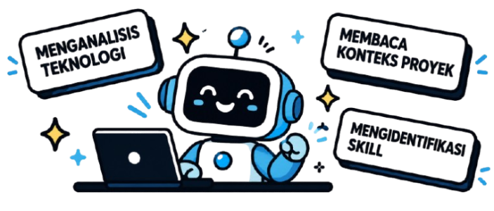

Progress Analisis AI
- Upload Project
- Target Role
- CV
- Analisis
AI Sedang Menganalisis proyek kamu...
Proses ini biasanya memakan waktu 1-3 menit. Kami menganalisis teknologi, peran, dan kontribusimu.

Progress Analisis
| 70% |
Proses ini biasanya memakan waktu 1-3 menit. Kami menganalisis teknologi, peran, dan kontribusimu.

| 70% |